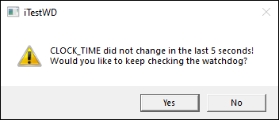

iTest User's Guide
The iTest watchdog program's purpose is to add an extra level of safety and security to the system in the event that vxin_exec crashes or locks up. In the case of a distributed system, it can protect in case the network link is lost. In normal operation, shutdowns and software safety are managed by limits and procedures. In the case that vxin_exec is somehow not able to respond, the application developer has a last line of notifications and software level response in addition to the hardware shutdowns that may be available. This is accomplished by the iTestWD.exe program.
By default, iTestWD is not launched automatically at startup. To launch it automatically, add iTestWD.exe to the PreLoad list in the powertek.ini file. Otherwise, you will need to manually launch iTestWD.exe, which can be done in several ways (e.g., through the use of a mailslot message or VCL). Once iTestWD is launched, the watchdog program is enabled.
When iTestWD detects an error, then any ChannelWrite and SendToMailslot commands issued by the iTestWD.bat file will only be processed by drivers that are running on the PC. Any drivers which were running on the real-time system will be unable to receive the command since either the network connection is lost or vxin_exec is down. A hardware safety will be the only way to issue commands to real-time drivers in this case.
If iTestWD detects if the vxin_exec or DataEngine have stopped responding for more than 5 seconds (based on the CLOCK_TIME), then it will launch a batch file called iTestWD.bat (located in the $SYSTEMDIR). This batch file can contain commands to bring the drivers to a safe state via mailslot commands to the drivers with the SendToMailslot utility or RDB set commands using the ChannelWrite utility. These utilities operate independently of vxin_exec and can be used regardless of the state of vxin_exec. For more information about both of these utilities, refer to the links under See Also.
 |
NOTE: | iTestWD utilizes the iTestWDTimeSecs powertek.ini setting to specify the timeout (in seconds) period to check for changes to CLOCK_TIME. By default, this is set to 5 seconds. |
While processing the iTestWD.bat file, iTestWD will prompt the user to continue checking the watchdog.
iTestWD Prompt

When the user instructs iTestWD to stop checking for the watchdog, iTestWD will close, and the iTestWD.log file will populate. iTestWD will continue to launch the iTestWD.bat file each time the timeout period is reached until it is instructed to stop checking the watchdog.